ツリー編集
「ツリー編集」タブをクリックするとツリー編集画面が表示されます。
インデックスの新規作成、編集、移動、削除を行うことができます。
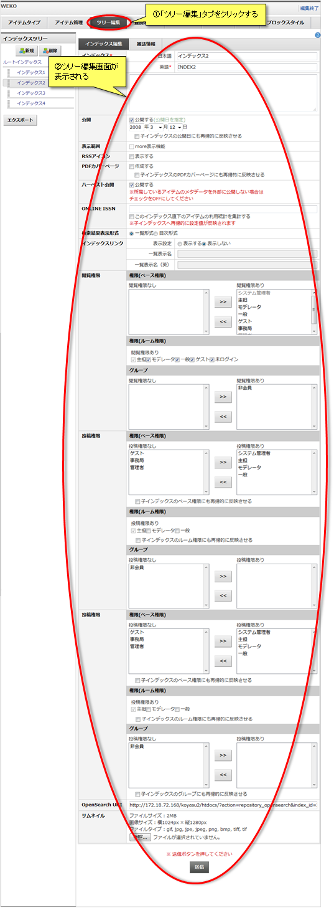
インデックスの新規作成、編集、移動、削除を行うことができます。
新規作成
インデックスを新規作成します。
「新規」をクリックするとルート(インデックスツリー)直下に新規インデックスが作成されます。
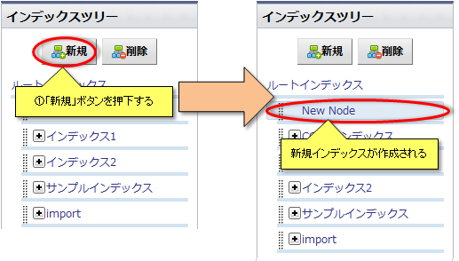
任意のインデックスをクリックして選択し、「新規」をクリックすると任意のインデックス直下にインデックスが新規作成されます。
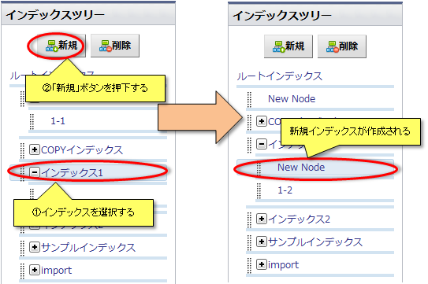
「新規」をクリックするとルート(インデックスツリー)直下に新規インデックスが作成されます。
任意のインデックスをクリックして選択し、「新規」をクリックすると任意のインデックス直下にインデックスが新規作成されます。
編集
インデックスの情報を編集します。
インデックスの情報を編集し、「送信」ボタンをクリックすると編集内容が反映されます。
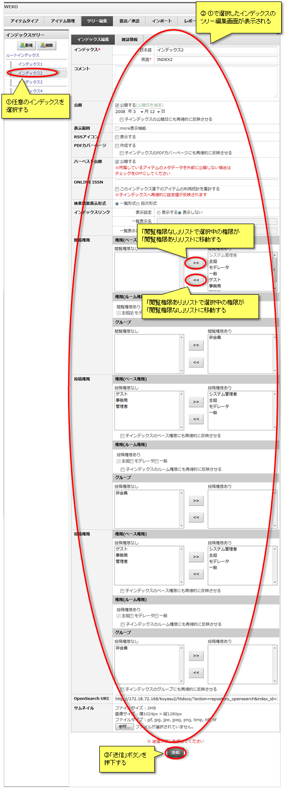
インデックスの情報は下記のとおりです。
【注意事項】
インデックスの情報を編集し、「送信」ボタンをクリックすると編集内容が反映されます。
インデックスの情報は下記のとおりです。
| 項目名 | 概要 |
|---|---|
| インデックス |
インデックス名を設定します。 日本語：サイトの表示言語が日本語の時に表示されます。 英語：サイトの表示言語が日本語以外の時に表示されます。 |
| コメント |
インデックスにコメントを設定します。 コメントは「インデックスリスト」に表示されます。 |
| 公開日 | インデックスの公開日を設定します。 |
| 表示範囲 | 親インデックスに子インデックスの初回表示個数を設定することができます。 |
| RSSアイコン |
「インデックスリスト」に表示するRSSアイコンの表示/非表示を設定します。 「表示する」にチェックがある場合、インデックスリストに「RSSアイコン」が表示されます。 |
| PDFカバーページ |
PDFカバーページを作成する/しないを設定します。 「作成する」にチェックがある場合、PDFカバーページが作成されます。 |
| ハーベスト公開 |
インデックスがハーベスト要求に対してデータの提供／非提供を設定します。 |
| ONLINE ISSN |
インデックスを一つの書籍として扱う設定をします。 設定の変更は子インデックス全てに適応されます。 |
| 検索結果表示形式 |
検索結果の表示形式を選択します。 「一覧形式」 検索結果をアイテムの一覧で表示します。通常はこの形式で設定されています。 「目次形式」 検索結果を見出しの一覧で表示します。 |
| インデックス一覧 |
トップページのインデックス簡易アクセスUIへの表示を設定します。 「一覧表示名」、「一覧表示名(英語)」 インデックス簡易アクセスUIに表示させるインデックス名を設定することができます。 未入力の場合はインデックス名が表示されます。 |
| 閲覧権限 |
インデックスの閲覧権限を設定することができます。 「閲覧権限あり」に表示されている権限およびグループに所属しているユーザーがそのインデックスを閲覧することができるようになります。 ■ベース権限 ユーザー情報のベース権限ごとの閲覧権限を設定します。 ■ルーム権限 WEKOが配置されたグループスペースの権限ごとの閲覧権限を設定します。 ■グループ ユーザーが所属しているグループごとの閲覧権限を設定します。 |
| 投稿権限 |
インデックスのアイテム投稿権限を設定することができます。 「投稿権限あり」に表示されている権限またはグループに所属しているユーザーがそのインデックスにアイテムを登録することができるようになります。 ■ベース権限 ユーザー情報のベース権限ごとの投稿権限を設定します。 ■ルーム権限 WEKOが配置されたグループスペースの権限ごとの投稿権限を設定します。 ■グループ ユーザーが所属しているグループごとの投稿権限を設定します。 |
| OpenSearch URI |
インデックス検索結果表示用URL。 |
| サムネイル |
インデックスのサムネイルを設定する。 検索結果の表示形式が目次形式の場合にサムネイルが表示されます。 また、検索結果の表示はインデックス検索結果画面をご参照下さい。 |
【注意事項】
- インデックスの英語名は必須入力です。
- 編集内容は「送信」ボタンをクリックしない限り反映されません。
- ベース権限を付加した使用者でも、所属するグループに投稿権限がない場合、投稿する事ができません。
投稿権限についての詳細はNetCommonsのヘルプをご参照下さい。
移動
インデックスのドラッグ&ドロップでインデックスを移動することができます。
インデックスの移動では子インデックスも一緒に移動されます。
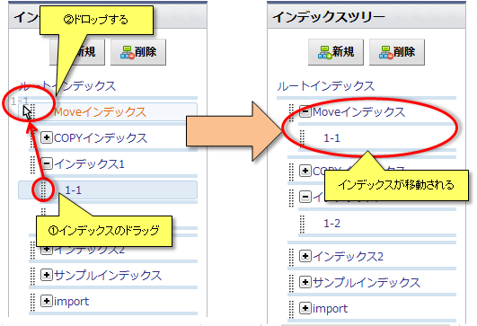
インデックスの移動では子インデックスも一緒に移動されます。
コピー
コントロールキーを押下しながら、インデックスのドラッグ&ドロップでインデックスをコピーすることができます。
インデックスのコピーでは設定および子インデックスも一緒にコピーされます。
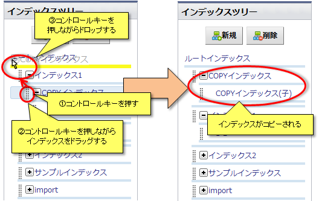
【注意事項】
インデックスのコピーでは設定および子インデックスも一緒にコピーされます。
【注意事項】
- インデックスに所属するアイテムはコピーされません。
削除
インデックスを削除することができます。
任意のインデックスをクリックして選択し、「削除」をクリックすると任意のインデックスが削除されます。
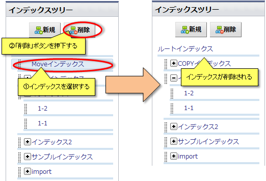
選択したインデックスに所属するアイテムまたは子インデックスが存在する場合、「削除」をクリックすると所属アイテムおよび子インデックスの処理について確認画面が表示されます。
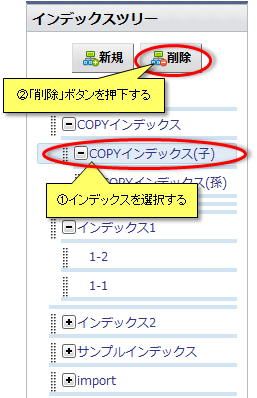
「すべて削除」を選択すると削除確認ダイアログが表示され、「OK」ボタンをクリックすると子インデックスおよびアイテムがすべて削除されます。
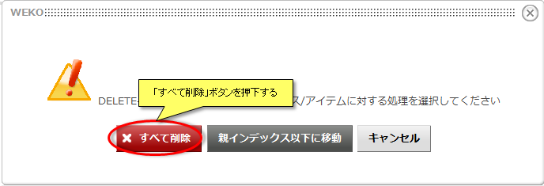
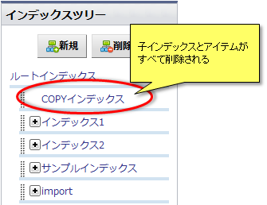
「親インデックスへ移動」をクリックすると、所属アイテムおよび子インデックスが親インデックス以下に移動されます。
ただし、「親インデックスへ移動」は選択インデックスがルートインデックス直下の場合は表示されません。
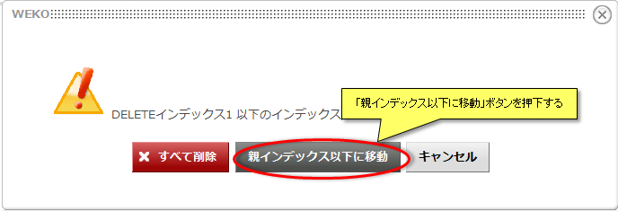
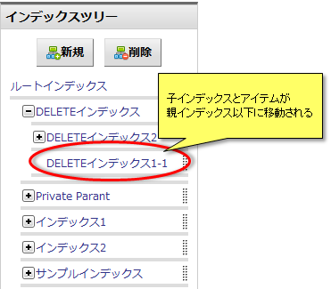
ルートインデックスを指定またはインデックスが未指定の場合、「削除」をクリックすると削除確認ダイアログが表示されます。
ルートインデックスの削除は登録している全てのインデックスおよびアイテムが削除されるため、チェックボックスにチェックを入れ、「全て削除」をクリックしないと実行されません。
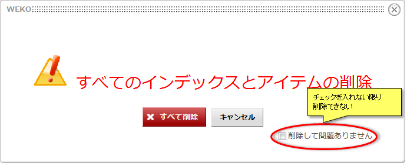
任意のインデックスをクリックして選択し、「削除」をクリックすると任意のインデックスが削除されます。
選択したインデックスに所属するアイテムまたは子インデックスが存在する場合、「削除」をクリックすると所属アイテムおよび子インデックスの処理について確認画面が表示されます。
「すべて削除」を選択すると削除確認ダイアログが表示され、「OK」ボタンをクリックすると子インデックスおよびアイテムがすべて削除されます。
「親インデックスへ移動」をクリックすると、所属アイテムおよび子インデックスが親インデックス以下に移動されます。
ただし、「親インデックスへ移動」は選択インデックスがルートインデックス直下の場合は表示されません。
ルートインデックスを指定またはインデックスが未指定の場合、「削除」をクリックすると削除確認ダイアログが表示されます。
ルートインデックスの削除は登録している全てのインデックスおよびアイテムが削除されるため、チェックボックスにチェックを入れ、「全て削除」をクリックしないと実行されません。
雑誌情報
国立情報学研究所にて運用しているElectronic Resources Database-JAPAN(以下、ERDB-JP)との連携機能です。
ERDB-JPでは登録された雑誌情報をポータルサイトへ提供し、各機関が刊行した学術文献へのアクセス増加を図っています。
WEKOリポジトリに登録された雑誌情報を収集することで、ERDB-JPは多くの機関から学術文献情報を得ることができ、WEKOリポジトリへのアクセス増加が期待できます。
ツリー編集画面で「雑誌情報」タブをクリックすると雑誌情報編集画面が表示されます。
インデックス毎の雑誌情報の編集、エクスポート時の出力設定を行うことができます。
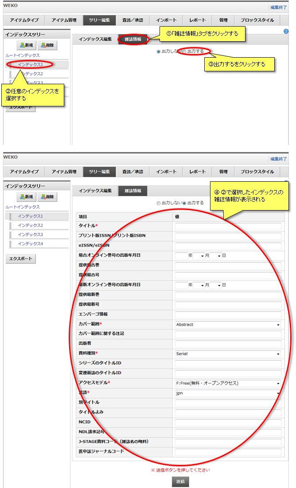
雑誌情報を編集します。
雑誌情報を編集し、「送信」ボタンをクリックすると編集内容が反映されます。
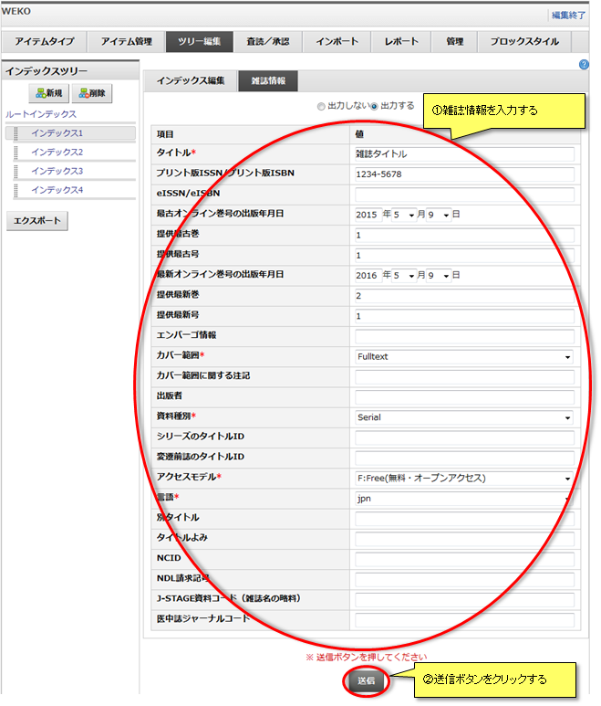
入力した雑誌情報をERDB-JPで読込むためのTSVファイルを出力します。
TSVファイルはKBART2拡張形式で記載されます。
TSVファイルには「出力する」を設定した全てのインデックスの雑誌情報が記載されています。
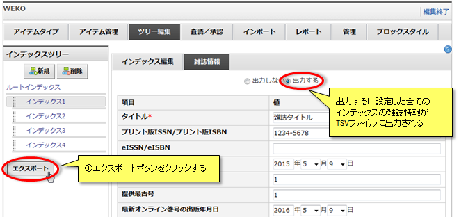
ERDB-JPでは登録された雑誌情報をポータルサイトへ提供し、各機関が刊行した学術文献へのアクセス増加を図っています。
WEKOリポジトリに登録された雑誌情報を収集することで、ERDB-JPは多くの機関から学術文献情報を得ることができ、WEKOリポジトリへのアクセス増加が期待できます。
ツリー編集画面で「雑誌情報」タブをクリックすると雑誌情報編集画面が表示されます。
インデックス毎の雑誌情報の編集、エクスポート時の出力設定を行うことができます。
雑誌情報を編集します。
雑誌情報を編集し、「送信」ボタンをクリックすると編集内容が反映されます。
入力した雑誌情報をERDB-JPで読込むためのTSVファイルを出力します。
TSVファイルはKBART2拡張形式で記載されます。
TSVファイルには「出力する」を設定した全てのインデックスの雑誌情報が記載されています。